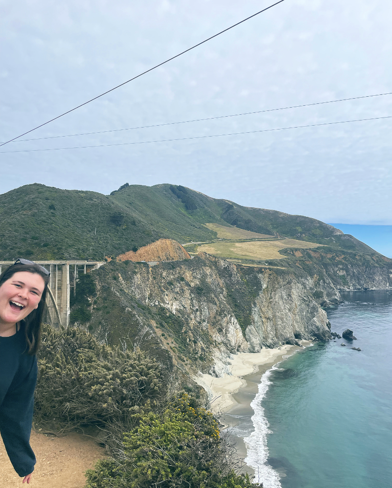

Sur-ulean
I know that I’ve written about the benefits of reading before and, to be honest, even I am starting to get sick of listing the multitude of reasons for why people should read, but no matter how I distract myself, reminders of the joy of reading constantly sneak up on me.
For example, I recently took a trip to Monterey, California for brunches, beaches and of course, Big Sur. With all of the stops, hikes and brunch reservations, the only thought I had about reading on this trip was the worry that I wasn’t going to have enough time to do any. (Thankfully our plane got delayed and allowed for lots of unexpected reading time). While I was excited for all of the things we had planned, I was pretty bummed about the half-finished novel at the bottom of my purse that was calling my name but, as a dedicated member of the team, I turned the radio up (to drown out the calls of the novel), rolled my window down and settled in for Highway 1.
Then the music shut off and Shri said, “Let’s just enjoy this in silence” as he pointed across the car and out the window. The only things outside the passenger window were mountains, cliffs and every shade of blue. The hues ranged from lighter to darker to lighter again as my eyes moved away from the coast, across the ocean, up the horizon and into the sky. The colors were so bright that I put on my sunglasses only to find myself taking them off again to revel once more in the brightness. The only thing breaking the silence of the moment was the obligatory “woah” that we both uttered each time the car rounded another corner.

As we set out on one of the many bluff trails, the silence finally broke as Shri asked, “What color would you even call this water?”
Without hesitating, I responded, “Cerulean.”
To which we both replied, “Wait, what?”
…
At the very end of my 60-book challenge, The House in the Cerulean Sea had been recommended to me as a feel-good, must read, so I read it. While, ultimately, it didn’t make it on the 60-book list, it was the first book that I finished in 2022.
The main storyline follows a man who works with homes for children who have special gifts - like super-power gifts. While it’s not really a story about magic, there is something magical about it in the fact that it is a world of nymphs, trolls and other creatures who read minds, regulate emotions and talk to plants. The cover of the novel is bright and bold and that’s exactly how I pictured the world that TJ Klune created inside this story. Which is perhaps why, after reading the book, I considered cerulean to be a magical color –or at least one that is other worldly.
Without spoiling anything, the main character is a very average type of man whom the author describes as unadventurous, predictable and seemingly a little sad. So, when he visits a house set atop an island, surrounded by what is described as a cerulean sea, of course, his hum-drum existence in a run-of-the-mill city is questioned by both himself and the children whose home he is visiting.
A big part of the main character's work in the homes he visits is ensuring that the non-magical world is not affected by the children residing in them. As in most magic/non-magic stories, the non-magical world is quick to separate themselves from magical beings, creating a relationship full of tension and resentment. It was assumed, by both the characters in the book and myself, that the non-magical community was afraid of what could happen if the two populations were to collide. But, after experiencing cerulean so unexpectedly, I have a new understanding and appreciation for what I think TJ Klune is really saying: The magical world, especially this little section of island, is so bright and beautiful that the non-magical world has trouble both looking at it and looking away from it. And isn't it just easier to hate something that intimidates you? Especially when it’s the beauty of it that’s so intimidating?
All this to say, my original theory that cerulean is a color not quite meant for our world was spot on. When watching the waves rolling in and out, of course the plain, boring man questioned his dreary life at home. Driving down Highway 1, I questioned my life too! Just like the non-magic community in the novel, how can you look at something so brilliant and not?
I probably won’t be using the word cerulean too many more times (as I am not Meryl Streep in the Devil Wears Prada ) but I would not have been able to describe that green-blue-clear, sparkling, shimmering water and the way it made me feel without it and the world that TJ Klune created – and that is what reading is all about!